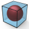

Create bounding box
 | Create boundary entities. → |
Create a cuboid or cylindrical box consisting of curves, faces or a solid that is at least large enough to allow all of the selected entities to fit inside. Use the Entity properties command to obtain information about the potential dimensions of a stock model and copy it to the clipboard.
Select
Select Entities  . The number of selected entities is displayed.
. The number of selected entities is displayed.
Minimize volume: Minimize the volume. For this purpose, the best fit is calculated for the X / Y alignment of a cuboid. In the case of a cylinder, a minimal volume is achieved by changing the position of the center line. The Z alignment is not considered.
Entity type
Specify an entity type for the result. Use Lines  to generate a box made of curves. Faces
to generate a box made of curves. Faces  creates a box made of faces. Solid
creates a box made of faces. Solid  generates a box as a solid.
generates a box as a solid.
Points: Generate a middle point for each side as the intersection point of the diagonals of the cuboid or the central axis with the shell of the cylinder . Convenient for positioning a reference system for CAM programming.
. Convenient for positioning a reference system for CAM programming.
Cuboid
Generate a bounding box in the shape of a cuboid.
Precise: Displays the size of the cuboid in the X, Y and Z direction without an offset, as determined by the selected entities.
Size: Displays the size of the cuboid in the X, Y and Z direction with the offset values. Define the bounding box by entering the length  , width
, width  and height
and height  . The values in Offset are adjusted. The values entered for X and Y are evenly distributed on both sides. In the case of Z, the value entered will be additionally added in the positive Z direction if no value has been entered in Offset, in other words, an offset of 0 has been defined. Otherwise, the entered value will be evenly distributed on both sides, as in the case of X and Y.
. The values in Offset are adjusted. The values entered for X and Y are evenly distributed on both sides. In the case of Z, the value entered will be additionally added in the positive Z direction if no value has been entered in Offset, in other words, an offset of 0 has been defined. Otherwise, the entered value will be evenly distributed on both sides, as in the case of X and Y.
Volume: Displays the volume.
Offset: Influence the size of the cuboid with an offset in positive or negative X, Y and Z direction. Enter values for the required directions 
 .
.
Reference
Select Workplane  to align the edges of the cuboid in relation to the axes of the current workplane. Alternatively, specify a suitable planar face as an Entity
to align the edges of the cuboid in relation to the axes of the current workplane. Alternatively, specify a suitable planar face as an Entity  . The position of the face in the space and the isoparametric curves of the face in the center of the domain in the U direction are used to align the cuboid.
. The position of the face in the space and the isoparametric curves of the face in the center of the domain in the U direction are used to align the cuboid.
Cylinder
Generate a bounding box in the shape of a cylinder. In addition to the offset, the size of the cylinder is also the result of the selected direction and the origin for the center line of the cylinder  .
.
Precise: The size of the cylinder is displayed in radius  and height
and height  , as determined by the selected entities.
, as determined by the selected entities.
Offset: Influence the size of the cylinder with an offset on the circumference  , in positive
, in positive  or negative direction
or negative direction  of the center line.
of the center line.
Volume: Displays the volume.
Select the direction by using an entity, specify it by using 2 points or selecting an axis direction of the current workplane (X Wp, Y Wp, Z Wp) or enter the direction with a Vector . The Invert  option inverts the direction.
option inverts the direction.

Use entities tessellation
Use Tessellation tolerance to specify the required level of precision or use Use entities tessellation to apply the required level of precision from the selected geometry.